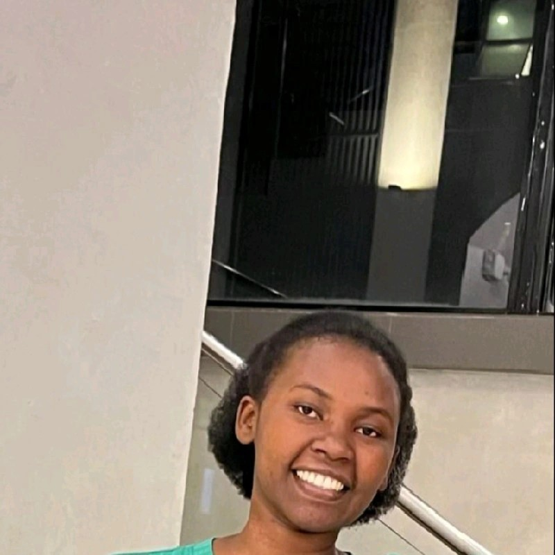

Data Science & Analytics | Machine Learning | Social Impact
I am a Data Science and Analytics specialist focused on transforming complex datasets into actionable insights. I bridge the gap between raw data and decision-making, applying machine learning, statistical analysis, and predictive modeling to real-world problems. I am detail-oriented, adaptable, and passionate about using data for measurable social and business impact, particularly in agriculture, nutrition, and education in Africa.
Python, R, SQL, MATLAB, Django
Predictive Modeling, Time Series Forecasting, Statistical Analysis
Dashboard Development, Data-Driven Storytelling
Power BI, Tableau, Excel, ggplot2, Matplotlib, Seaborn
Google Analytics, Web and Social Media Analytics, Audience Metrics
Google Cloud Platform (GCP), GitHub, Streamlit, Jupyter Notebook
Problem-solving, Communication, Team Collaboration, Critical Thinking
Developed ARIMA and neural network models to forecast stock prices across 20 companies over 10 years of data.
Tools: Python, MATLAB, Scikit-learn
SDG Impact: SDG 9 (Industry, Innovation, & Infrastructure)
View on GitHubUsed clustering analysis to identify customer segments based on demographics and spending behavior.
Tools: Python, Scikit-learn, Pandas, Seaborn
SDG Impact: SDG 8 (Decent Work & Economic Growth)
View on GitHubBuilt a Naive Bayes classifier achieving 97% accuracy using TF-IDF vectorization and NLP preprocessing.
Tools: Python, NLTK, Scikit-learn
SDG Impact: SDG 16 (Peace, Justice, & Strong Institutions)
View on GitHubCreated a predictive model to assess 30-day readmission risk for cardiac patients using ensemble learning and SHAP interpretability.
Tools: Python, Scikit-learn, SHAP, Pandas
SDG Impact: SDG 3 (Good Health & Well-being)
View on GitHubDesigned a content-based recommendation engine using NLP on the TMDB dataset with a Streamlit interface.
Tools: Python, Streamlit, Scikit-learn, Pandas
SDG Impact: SDG 9 (Industry, Innovation, & Infrastructure)
View on GitHubConstructed a linear regression model to predict house prices using the Boston Housing dataset.
Tools: Python, Scikit-learn, Pandas, Matplotlib, Seaborn
SDG Impact: SDG 11 (Sustainable Cities & Communities)
View on GitHubBuilt predictive models and dashboards to forecast hybrid rice yields and improve food security planning in Rwanda.
Tools: Python, Power BI, Excel
SDG Impact: SDG 2 (Zero Hunger)
View on GitHubAnalyzed the effect of digital resource availability on student learning outcomes at Kibera Primary School.
Tools: R, ggplot2, Excel
SDG Impact: SDG 4 (Quality Education)
View on GitHubDeveloped an app to track dietary intake and recommend interventions for undernourished residents.
Tools: Android, Python, Machine Learning
SDG Impact: SDG 3 (Good Health & Well-being)
View on GitHubBSc in Data Science & Analytics
United States International University–Africa (Expected 2027)
Email: hoziyanarachel7@gmail.com
GitHub: github.com/HRacheal
LinkedIn: linkedin.com/in/rachelhoziyana